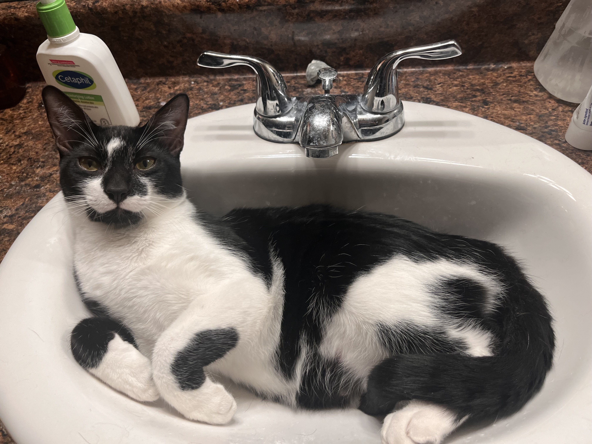

hongry
snaccs r lyfe.
ebry meal deserve encore, side quest, and highly justified second dinner. kitchen patrol happen on sacred schedule, mostly whenever po remembers food probably still exists.
po dossier
henlo yes i am po. i hear bag rustle from nine counties away. i am brave, i am hongry, and i inspect danger if maybe edible.
if snack exist anywhere in known universe, po already filing claim on it.

hongry
ebry meal deserve encore, side quest, and highly justified second dinner. kitchen patrol happen on sacred schedule, mostly whenever po remembers food probably still exists.
heroism
weird noise in hall? po go check. mysterious box? po go check. ghost? maybe check if ghost drop treats.